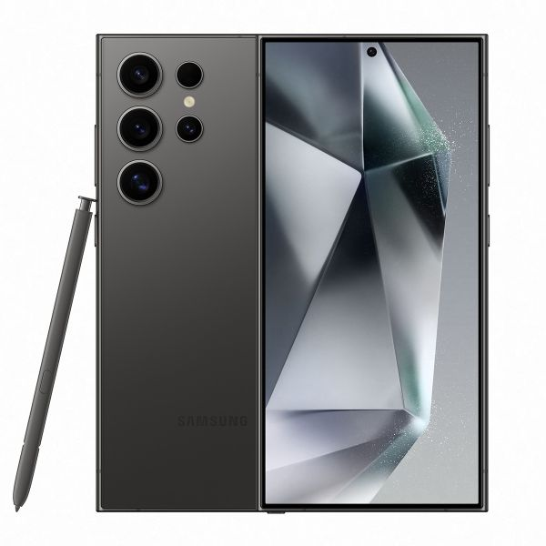
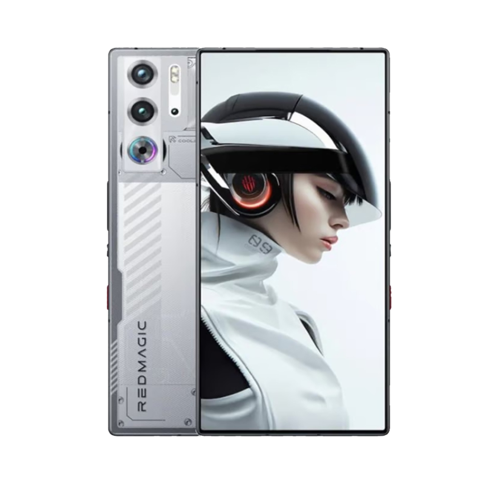
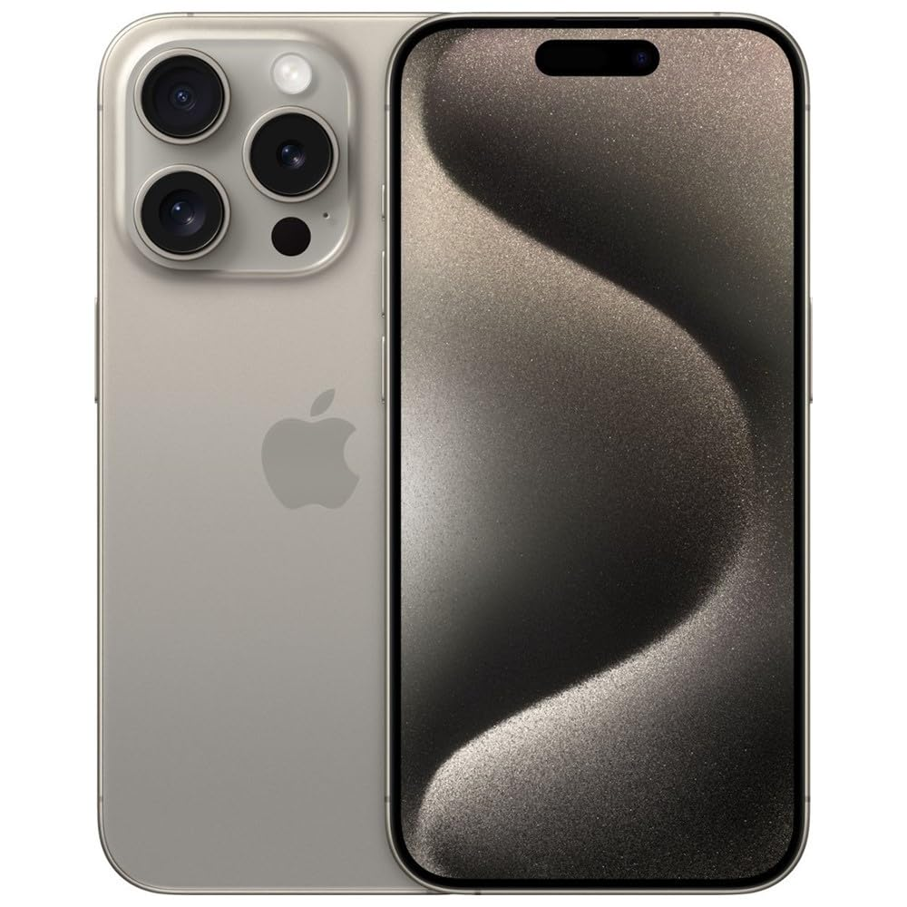
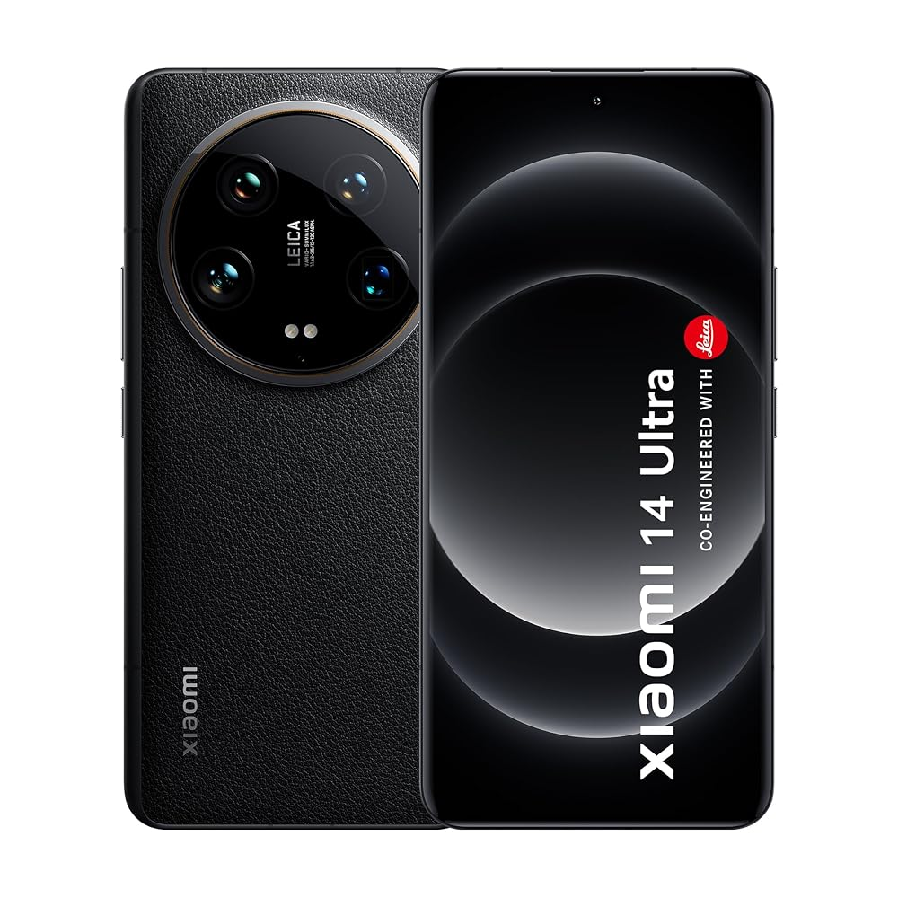

Últimos Smartphones 2025
La nueva generación de smartphones trae grandes innovaciones en potencia, fotografía y diseño. A continuación, los mejores modelos de este año:
Samsung Galaxy S24 Ultra

El Galaxy S24 Ultra destaca por su cámara de 200MP, su construcción de titanio y su procesador Snapdragon 8 Gen 3, ofreciendo el máximo rendimiento para cualquier tarea.
- Pantalla: 6.8” Dynamic AMOLED 2X, 120Hz
- Procesador: Snapdragon 8 Gen 3
- Cámara principal: 200MP
- Almacenamiento: Hasta 1TB
Nubia RedMagic 9 Pro

El Nubia RedMagic 9 Pro es el rey de los móviles gamer. Cuenta con un ventilador interno, pantalla de 120Hz y potenciado también por el Snapdragon 8 Gen 3.
- Pantalla: 6.8” AMOLED, 120Hz
- Procesador: Snapdragon 8 Gen 3
- Refrigeración: Ventilador interno activo
- RAM: Hasta 16GB
iPhone 15 Pro Max

El iPhone 15 Pro Max llega con cuerpo de titanio, el nuevo chip A17 Pro de 3nm y una cámara de 5x zoom óptico, consolidándose como uno de los móviles más avanzados de Apple.
- Pantalla: 6.7” OLED Super Retina XDR
- Procesador: A17 Pro (3nm)
- Cámara: Zoom óptico 5x
- Puerto: USB-C
Xiaomi 14 Ultra

El Xiaomi 14 Ultra combina una construcción premium, un sistema de cámaras desarrollado con Leica y el poderoso Snapdragon 8 Gen 3, siendo uno de los mejores Android de 2025.
- Pantalla: 6.73” AMOLED LTPO, 120Hz
- Procesador: Snapdragon 8 Gen 3
- Cámara: Sensor principal de 1 pulgada Leica
- Batería: 5000mAh, carga rápida 90W
Conclusión
El año 2025 trae innovaciones increíbles en el mundo de los celulares, desde mejores cámaras hasta mayor potencia y eficiencia. Cada marca apuesta por características que los hacen únicos.